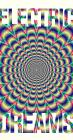
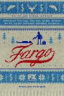
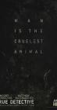
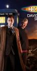
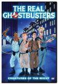
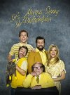
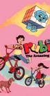
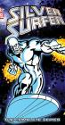

Most Recent Episode Watched Per Series
Series Overview
Next Unwatched Episode Per Series
Timeline of All Watched Episodes


Stephen Klancher: May 12, 2019



Stephen Klancher: April 30, 2019

Stephen Klancher: April 24, 2019

Stephen Klancher: March 2, 2019
Stephen Klancher: February 26, 2019


Stephen Klancher: December 22, 2018

Stephen Klancher: November 16, 2018

Stephen Klancher: October 30, 2018


Stephen Klancher: September 4, 2018


Stephen Klancher: June 30, 2018


Stephen Klancher: June 26, 2018

Stephen Klancher: June 10, 2018

Stephen Klancher: June 8, 2018

Stephen Klancher: June 6, 2018

Stephen Klancher: June 4, 2018


Pickler, Pebbles, Pillows and Priestley (2018) Airs on 2018-02-18
S1 - E1 of The Joel McHale Show with Joel McHale
S1 - E1 of The Joel McHale Show with Joel McHale
Stephen Klancher: February 21, 2018

Stephen Klancher: January 29, 2018
Stephen Klancher: January 28, 2018


Stephen Klancher: January 18, 2018

Jimmy Fallon: The Unsinkable Legend: Part 1 Airs on 2014-12-18
S5 - E7 of Comedians in Cars Getting Coffee
S5 - E7 of Comedians in Cars Getting Coffee
Stephen Klancher: January 13, 2018

It's a Whole New Ball Game Now (2018) Airs on 2018-01-12
S1 - E1 of My Next Guest Needs No Introduction With David Letterman
S1 - E1 of My Next Guest Needs No Introduction With David Letterman
Stephen Klancher: January 12, 2018
Stephen Klancher: December 22, 2017
Hello Again, Hope's Peak High School (2016) Airs on 2016-07-14
S1 - E1 of Danganronpa 3: The End of Hope's Peak Academy Side: Despair
S1 - E1 of Danganronpa 3: The End of Hope's Peak Academy Side: Despair
Stephen Klancher: November 25, 2017

Prologue: Welcome to despair High School (2013) Airs on 2013-07-04
S1 - E1 of Danganronpa: The Animation
S1 - E1 of Danganronpa: The Animation
Stephen Klancher: October 31, 2017
Stephen Klancher: October 4, 2017

Stephen Klancher: September 27, 2017


Stephen Klancher: April 13, 2017


RNC, Tony Goldwyn, Mark Cuban, Lewis Black, Cory Kahaney, Wyclef Jean (2016) Airs on 2016-07-20
S1 - E180 of The Late Show with Stephen Colbert
S1 - E180 of The Late Show with Stephen Colbert
Stephen Klancher: July 22, 2016


Stephen Klancher: April 19, 2016


Stephen Klancher: March 3, 2016

Stephen Klancher: February 15, 2016
Stephen Klancher: January 29, 2016

Stephen Klancher: October 17, 2015


Stephen Klancher: May 21, 2015
Chapter 1: A Body in the Bay (2022) Airs on 2015-02-08
S1 - E1 of The Jinx: The Life and Deaths of Robert Durst
S1 - E1 of The Jinx: The Life and Deaths of Robert Durst
Stephen Klancher: May 18, 2015

Stephen Klancher: April 19, 2015

Stephen Klancher: April 19, 2015
Stephen Klancher: March 30, 2015


Stephen Klancher: February 14, 2015
Stephen Klancher: February 10, 2015


Stephen Klancher: January 3, 2015


Stephen Klancher: December 22, 2014


Stephen Klancher: December 12, 2014
The Origin of the Spider-Friends (1983) Airs on 1983-10-15
S3 - E5 of Spider-Man and His Amazing Friends
S3 - E5 of Spider-Man and His Amazing Friends
Stephen Klancher: December 11, 2014

Stephen Klancher: November 23, 2014

Stephen Klancher: November 19, 2014


Stephen Klancher: November 15, 2014

Marion Cotillard / Ross Matthews (2014) Airs on 2014-11-06
S11 - E43 of The Late Late Show with Craig Ferguson
S11 - E43 of The Late Late Show with Craig Ferguson
Stephen Klancher: November 11, 2014

Stephen Klancher: November 8, 2014


Stephen Klancher: September 29, 2014

Stephen Klancher: August 26, 2014


Stephen Klancher: July 14, 2014

Stephen Klancher: July 12, 2014


Stephen Klancher: June 9, 2014


Stephen Klancher: April 29, 2014

Stephen Klancher: April 10, 2014
Seemed more like a joke than a real attempt at an American version, especially given that Moss is just the exact same guy doing the exact same script with different actors.


Stephen Klancher: March 24, 2014


Stephen Klancher: January 26, 2014

Stephen Klancher: January 26, 2014

Stephen Klancher: January 17, 2014
Stephen Klancher: January 12, 2014

Stephen Klancher: January 11, 2014


Stephen Klancher: August 18, 2013
Alyse introduced me and this is the first episode I watched. Awesomely fun!
Stephen Klancher: August 10, 2013

Stephen Klancher: August 1, 2013
Stephen Klancher: July 20, 2013


Stephen Klancher: April 3, 2013


Stephen Klancher: January 27, 2013
Maddi wanted me to watch this with her and I have to admit, it was entertaining.

Stephen Klancher: November 8, 2012
After rewatching the movie, had to watch an episode of the cartoon for nostalgia's sake.

Stephen Klancher: June 17, 2012
Greetings programs! Chanced upon this while looking for something else. Pretty cool style and they use some of the same music which I love.


Stephen Klancher: May 10, 2012
Stephen Klancher: January 1, 2012
I watched this episode because I was told it mentioned Farscape. Now that I've verified the veracity of the claim, I must watch the whole series.

Stephen Klancher: December 18, 2011


Stephen Klancher: August 15, 2011
Stephen Klancher: August 9, 2011
Not used to motion comics but that was fun. Often it seemed to lead better art, worse motion, but good overall. The Joss Whedon humor shined through.

Maria Bamford, Hannibal Buress, Amy Schumer, and Marc Maron (2010) Airs on 2010-01-29
S1 - E4 of John Oliver's New York Stand-Up Show
S1 - E4 of John Oliver's New York Stand-Up Show
Stephen Klancher: August 5, 2011


Stephen Klancher: January 13, 2011
That was all kinds of fun. Shared dreamstate, weird science, only sometimes-lucid scientist, mega corporation which can interrogate dead people, hints of conspiracy, topped with a pretty girl. More please.
The Melancholy of Haruhi Suzumiya I (2006) Airs on 2006-04-09
S1 - E2 of The Melancholy of Haruhi Suzumiya
S1 - E2 of The Melancholy of Haruhi Suzumiya
Stephen Klancher: December 14, 2010
Cute silly fun. If I watch more of this, I'll watch in the proposed chronological order, rather than broadcast or whatever other episode orders exist.

Stephen Klancher: December 2, 2010


Stephen Klancher: September 22, 2010
No, no... THAT's not the event... I wasn't too into it, but people wanted to try it.
Stephen Klancher: September 11, 2010
Recommendation from Jenith and it was pretty good. Feels like a cross between The Office and Arrested Development. I love the fact that they had to schedule when to shoot the kid with the BB gun.


Stephen Klancher: August 26, 2010
Ah, this is much more fun than "King of Bandit Jing". Funny, crazy, fan service anime.

Stephen Klancher: May 13, 2010
First episode of this series I've ever watched. After finishing Farscape I stumbled upon a description of this and that Farscape was one of the many things parodied. It was way fun to watch. So weird to see Ben and Claudia together as people other than John and Aeryn. The Farscape scene was very fun to see, though weird that Ben played Stark instead of his own character. Also the puppet retelling of the Stargate movie! Very fun. Someday I might actually start watching this or another Stargate series.

Stephen Klancher: May 2, 2010
I always enjoy a "Too soon?" line. And "polling his constituency" as innuendo.


Stephen Klancher: March 9, 2010

Stephen Klancher: February 8, 2010

Stephen Klancher: December 12, 2009
Pretty average. Nowhere near Adam Reed's other series: Sealab 2021 and Frisky Dingo. Might be worth checking another episode later to see if it gets better.

Stephen Klancher: November 19, 2009
I had read a little bit of the book (which eclipsed this whole episode), but decided that watching would be more fun. Carl Sagan's voice is very enjoyable and the sincerity he projects when he talks about some of this stuff is incredible. When he tells the story, it's hard not to feel mournful for the knowledge lost in the destruction of the Ancient Library of Alexandria.

Stephen Klancher: November 14, 2009
So I'm giving this a try because it has a strong recommendation from Brett. Oh also, he had pointed out it is listed on TVTropes under Sanity Slippage, which just invites me right in. This first episode seemed ok but mostly pretty cheesey. Although Brett, not having seen the first episode, seemed disappointed and says it gets better when they introduce more characters several episodes in.

Stephen Klancher: November 9, 2009
This episode did a great job of immediately throwing them into an impossibly stressful situation. They looked brutally haggard waiting for the next 33 minute jump interval.
Stephen Klancher: October 18, 2009

Stephen Klancher: October 11, 2009
Interesting concept. Not having known what this was about, I was really surprised that the premise was that the synthetic blood ended the secrecy usually associated with vampires. I like secrecy as being part of the expected vampire lore, but this certainly allows for a different type of story. I was also surprised that they nonchalantly have the main character as a telepath. That alone can make for a lot of fun story situations. I rented this and watched it with my mom. Every time she asked a question about what they can do, I had to respond that every story changes the rules about vampires.

Stephen Klancher: September 29, 2009
There were some things recently which sounded really interesting in House, a series long since recommended to me by many people. I was told that if I were interested I should at least watch the season leading up to it. Well, I screwed up and went back a season further. I hate jumping around and not starting from the beginning in a series, but oh well. This is my first episode, other than some random single episode a few years ago. After a night of watching 5 of them I'm hooked. The whole new-team weed out process is really fun.

Stephen Klancher: September 6, 2009
Show seems well made and I know a lot of people like it, but I'm not sure this is something I can really care about all that much.
Stephen Klancher: September 2, 2009
Seems like a lot of people have recommended Dexter, so I'm going to go ahead and watch it. Seems like it will be fun.

Stephen Klancher: June 3, 2009
I've long had the vague plan of watching the entirety of DBZ, but that is 291 or 276(?) episodes whether I picked subbed or dubbed. The plan for this remaster/reedit is to cut filler and do it in 100 episodes. That does make it sort of tempting.
Interesting seeing Dragonball and Bardock special content integrated into the original Z episode. The animation shows its age despite the attempt to clean it up. I wonder if episodes later in the series will be higher quality.
Interesting seeing Dragonball and Bardock special content integrated into the original Z episode. The animation shows its age despite the attempt to clean it up. I wonder if episodes later in the series will be higher quality.
Stephen Klancher: June 3, 2009
Some of the same people as Arrested Development, but this was only so-so.


Stephen Klancher: April 19, 2009
It's ok. I see the similarities to The Office. I didn't like The Office immediately, so I could imagine this getting better and growing on me.



Stephen Klancher: February 18, 2009
Joss Wheaton's new series... There's no way I'll like it like Firefly, but it looks decent. Did not understand what I was supposed to be seeing in the very last scene. I'll give it a few episodes and see how I'm liking it.

Stephen Klancher: February 3, 2009
Weird but interesting. Looks like it was done by an artist rather than an animator, which has pros and cons. "Still talking out loud..."
Stephen Klancher: January 24, 2009


Stephen Klancher: December 10, 2008

Stephen Klancher: December 7, 2008

Stephen Klancher: October 9, 2008

Stephen Klancher: September 19, 2008
Stephen Klancher: September 18, 2008
Story actually seems ok. The animation is pretty bad. The voices are good because they are mostly the original cast. But the audio quality of the copies I have is pretty low. At this point I'm not sure if I will watch more or not.

Stephen Klancher: August 13, 2008


Stephen Klancher: July 20, 2008

Stephen Klancher: July 17, 2008
I took a 5 year break in watching this series between episode 13 and 14.
Stephen Klancher: July 15, 2008


Stephen Klancher: June 24, 2008

Stephen Klancher: June 22, 2008

Stephen Klancher: June 22, 2008


Stephen Klancher: April 28, 2008

Stephen Klancher: April 22, 2008


Stephen Klancher: April 5, 2008


Stephen Klancher: February 18, 2008


Stephen Klancher: January 21, 2008

Stephen Klancher: January 12, 2008
Stephen Klancher: January 9, 2008

Stephen Klancher: January 8, 2008

Stephen Klancher: January 2, 2008

Stephen Klancher: November 20, 2007


Stephen Klancher: October 1, 2003

Stephen Klancher: October 1, 2003
Stephen Klancher: October 1, 2003

The Man from the South / A Fruitless Lunchtime (2003) Airs on 2003-08-25
S2 - E1 of Full Metal Panic!
S2 - E1 of Full Metal Panic!
Stephen Klancher: September 29, 2003
Stephen Klancher: August 18, 2003

Stephen Klancher: April 7, 2002
This was probably the only episode I actually watched as it aired. It was the first of the second season and I went over to Katrina's house to watch it with her.

Stephen Klancher: March 29, 1985
Appearently my mom watched this right after I was born. I suppose that means I "watched" it.


Stephen Klancher: SEEN


Stephen Klancher: SEEN


Stephen Klancher: SEEN
I watched the first hour of this at some point and it felt pretty forced. Wouldn't be surprised if it got better over time, or if it had good episodes here and there, but wasn't into it from the first bit I saw.


Stephen Klancher: SEEN
Stephen Klancher: SEEN

Stephen Klancher: SEEN
Overall the series was hit and miss, but seeing this episode is the reason I wanted to watch more.
Nekketsu shitei no kizuna ~ otoko ga nind o tsuranuku toki ~ (2004) Airs on 2004-09-08
S1 - E100 of Naruto
S1 - E100 of Naruto
Stephen Klancher: SEEN
I had watched episodes here and there, but one weekend I watched I spent mostly watching a Naruto marathon when they were celebrating the 100th episode in English on Cartoon Network.


Stephen Klancher: SEEN

Stephen Klancher: SEEN
I watched this episode at some point long ago and wrote the following joking "review" under the guise of being a professional Ninja Turtles critic:
Oh Shredder, you were so close. One minute left before your Dimension X portal opened unleashing your army? It's too bad you underestimated the turtles. ....Again.
Come on, Krang is made entirely of brains and he says finish the turtles first, but does Shedder listen?
Some nicely orchestrated moves by the turtles to subdue renegade construction equipment and April's corny jokes were all that saved this episode.
Jeez, you'd swear they write this stuff for kids or something.
Oh Shredder, you were so close. One minute left before your Dimension X portal opened unleashing your army? It's too bad you underestimated the turtles. ....Again.
Come on, Krang is made entirely of brains and he says finish the turtles first, but does Shedder listen?
Some nicely orchestrated moves by the turtles to subdue renegade construction equipment and April's corny jokes were all that saved this episode.
Jeez, you'd swear they write this stuff for kids or something.


Stephen Klancher: SEEN

Stephen Klancher: SEEN

Stephen Klancher: SEEN